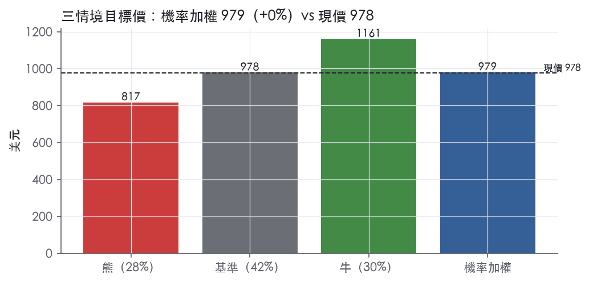
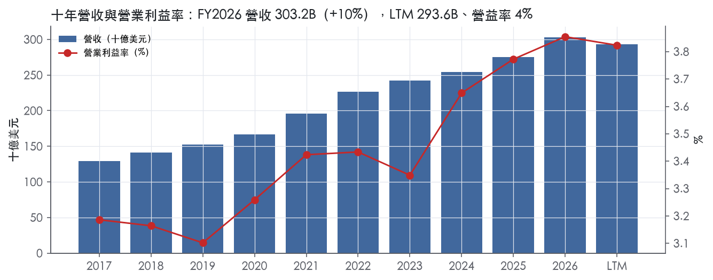
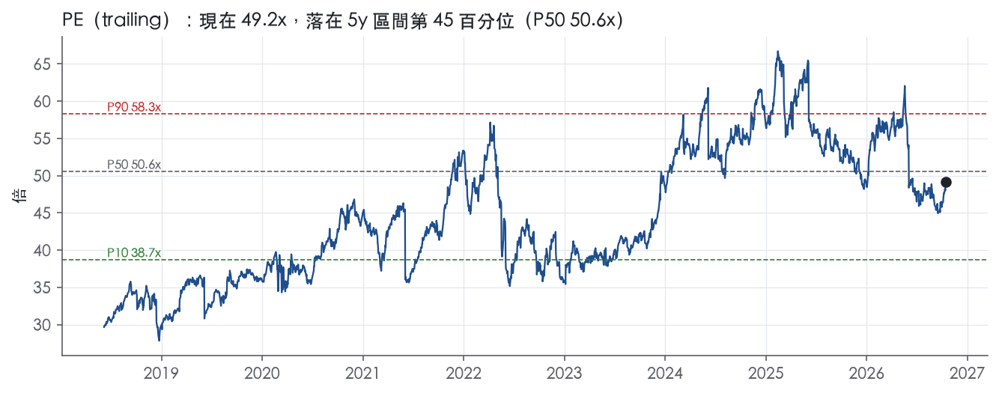
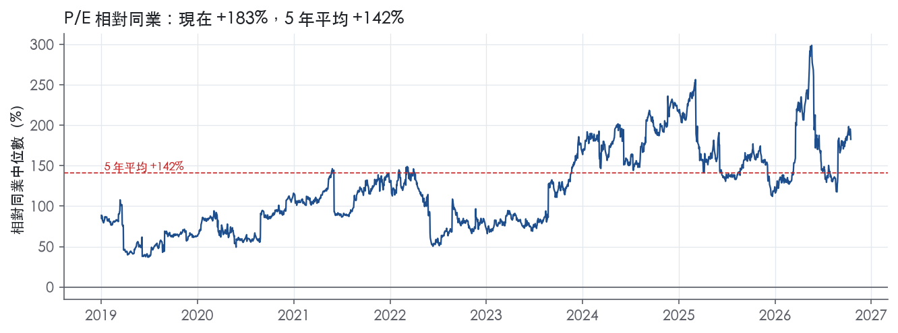
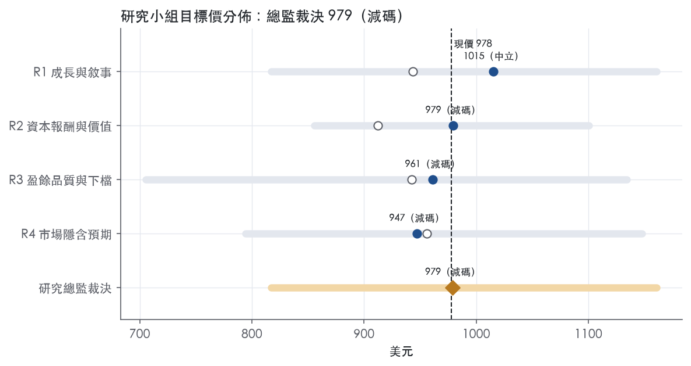
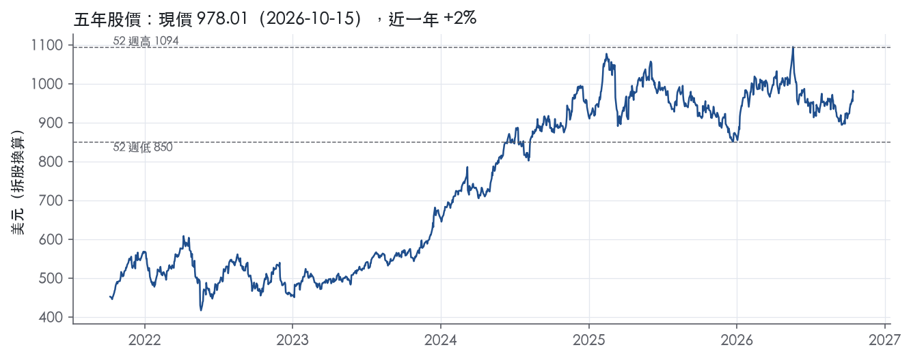

評等總表 › 必需消費 › COST
倍數持平盈餘續增，報酬略低門檻，中性｜評等 減碼｜目標價 979
| 報告日 | 評等 | 目標價 | 當時股價 | 超額報酬 |
|---|---|---|---|---|
| 2026-10-15 | 減碼 | 979 | 978 | -8.0% |
| 2026-10-02 | 中立 | 965 | 921 | -3.3% |
| 評等 | 減碼 |
| 12 個月目標價 | 979 美元 |
| 現價 | 978.01 美元（2026-10-15） |
| 預期報酬 | 股價 +0.1%＋股息 0.6%＝總報酬 +0.7%；同業籃門檻 8.7%，超額 -8.0% |
| 估值方法 | P/E 47.0x，套在未來四季的EPS |
| 三情境 | 熊 817／基準 978／牛 1161 |
| 研究流程 | 四位研究員兩輪辯論＋研究總監裁決 |
| 資料來源 | SEC EDGAR XBRL、Tiingo、FRED（全免費） |
倍數持平盈餘續增，報酬略低門檻，中性（研究總監裁決，四位研究員兩輪辯論後）
評等 減碼｜12 個月目標價 979 美元（總監三情境機率加權 988 與研究員中位數 970 各半）｜現價 978.01（2026-10-15）
預期報酬：股價 +0.1%＋股息 0.6%＝總報酬 +0.7%。同業籃門檻 8.7%，超額 -8.0%。
估值方法：P/E 47.0x，套在未來四季的EPS。三情境：熊 817（28%）／基準 978（42%）／牛 1161（30%）。
立場中性而評等減碼：評等看的是「預期總報酬 0.7% − 同業籃門檻 8.7%」＝超額 -8.0%，不是絕對漲跌；中性但超額偏離門檻，代表情境機率或股利把報酬推離門檻。
什麼會讓研究總監改變看法：FY2027Q1 美國調整後可比低於 5.0% 且單季營益率低於 3.6%，轉偏空並以 R1 熊情境為基準；調整後可比連兩季 7% 以上且營益率無一次性站上 4.1%，倍數上調至 5y P50 50.6x 並轉偏多。
| 過去四季（實際，FY2026Q3） | 未來四季 | 第 5–8 季 | 第 9–12 季 | |
|---|---|---|---|---|
| 營收（B） | 293.6B | 318.5B | 342.4B | 366.4B |
| 營收成長 | 35.0% | 8.5% | 7.5% | 7.0% |
| 營業利益率 | 3.8% | 3.9% | 3.9% | 3.9% |
| EPS（美元） | 19.88 | 20.81 | 22.42 | 24.03 |
| EPS 成長 | 56.5% | 4.7% | 7.7% | 7.2% |
| 每股股息（美元） | 5.37 | 5.37 | 5.37 | 5.37 |
| P/E（現價） | 49.2x | 47.0x | 43.6x | 40.7x |
| 股息殖利率（現價） | 0.6% | 0.5% | 0.5% | 0.5% |
過去四季為申報數字；預測為研究總監的假設、程式計算。倍數與殖利率都用現價計算，用來看現價對應各期獲利的高低。
| 項目 | 上次（2026-10-05） | 這次（2026-10-16） | 變動 |
|---|---|---|---|
| 評等 | 中立 | 減碼 | 變動 |
| 機率加權目標價（美元） | 965 | 979 | +1.5% |
| 超額報酬 | -3.3% | -8.0% | -4.7 pp |
| 目標倍數 | 45x | 47x | — |
| 未來四季營收成長 | 9.5% | 8.5% | -1.0 pp |
| 未來四季營益率 | 4.0% | 3.9% | -0.2 pp |
| 未來四季 EPS（美元） | 21.75 | 20.81 | -4.3% |
| 熊／基準／牛機率 | 24／48／28 | 28／42／30 | — |
程式計算；「未來四季」各自從當次報告的資料起點算。研究總監逐點說明見第八章「與上次報告比較」。
| 情境 | 機率（歷史） | 故事 | 未來四季營收成長 | 第 5–8 季營益率 | 倍數 | 目標價 | 股價漲跌 |
|---|---|---|---|---|---|---|---|
| 熊 | 28%（30%） | 本行下行路徑失業率 5.3% 經美加占營業利益 83%、加州占美國淨銷售 26% 傳導（風險表第 1 條），工資壓 SG&A（第 5 條），comp 跌破 5% 引發倍數回落 10y P50（第 3 條） | 5.5% | 3.6% | 42.6x | 817 | -16.4% |
| 基準 | 42%（42%） | 調整後可比 6% 上下加展店與會員費、WTI 97→76 壓低帳面成長、營益率守 3.9%，市場付的倍數與今天相同 | 8.5% | 3.9% | 47.0x | 978 | 0.0% |
| 牛 | 30%（28%） | 本行上行路徑加消費降級帶來客，調整後可比回 8% 以上、數位可比回 21%、營益率站上 4.1%，現金 20,207M 支撐特別股利，倍數回 3y P50 | 10.0% | 4.1% | 54.3x | 1161 | 18.7% |
目標價由程式依研究總監的驅動與倍數計算；機率由研究總監給定。括號內是歷史頻率：把這檔股票過去十年 12 個月報酬的波動形狀，置中在基準情境，結果落在各情境附近的比例。

四位研究員用不同方法各自估值，回應研究總監的質疑後交出第二輪，最後由總監逐點裁決。各研究員的主張見第七章，裁決理由見第八章，完整論證見《研究底稿》。
| 立場（一輪→二輪） | 加權目標價（一輪→二輪） | 評等（一輪→二輪） | 第二輪倍數 | 熊～牛目標價 | |
|---|---|---|---|---|---|
| R1 成長與敘事 | 中性→中性 | 943→1015 | 減碼→中立 | 49.2x | 817～1161 |
| R2 資本報酬與價值 | 看空→看空 | 912→979 | 減碼→減碼 | 47.0x | 856～1100 |
| R3 盈餘品質與下檔 | 中性→看空 | 942→961 | 減碼→減碼 | 47.0x | 706～1134 |
| R4 市場隱含預期 | 看空→看空 | 956→947 | 減碼→減碼 | 46.0x | 794～1148 |
| 研究總監裁決 | 中性 | 979 | 減碼 | 47.0x | 817～1161 |
目標價由程式依各自的驅動與倍數計算；評等＝機率加權總報酬 − 同業籃門檻。
Costco 是一家會員制倉儲量販公司，靠低SKU、高週轉、會員費補貼毛利的模式，在全球經營大型倉儲與電商站點。公司「principally engaged in the operation of membership warehouses in the United States (U.S.) and Puerto Rico, Canada, Mexico, Japan, the United Kingdom (U.K.), Korea, Australia, Taiwan, China, Spain, France, Sweden, Iceland, and New Zealand」¹。業務邏輯是「offering low prices on a limited selection of nationally-branded and private-label products in a wide range of categories will produce high sales volumes and rapid inventory turnover」，進而「enable us to operate profitably at significantly lower gross margins...than most other retailers」¹。公司「carry less than 4,000 active stock keeping units (SKUs) per warehouse in our core warehouse business, significantly less than other broadline retailers」¹，電商則「average from 9,000 to 11,000 SKUs online」¹。賣的對象是付費會員，FY2026 年底總持卡人數達150,400 千人（含家庭卡），其中付費會員84,100 千人¹。FY2026 全年營收303.15B 美元，年增10.1%。
10-K 並未以傳統「報導分部」拆解營收結構，僅在財務附註Note 11 揭露地理與分部資訊，10-K Item 1 本身未揭露各業務線的營收佔比明細¹。公司把商品與服務分成三大類：「Core Merchandise Categories」(Foods and Sundries、Non-Foods、Fresh Foods)、「Warehouse Ancillary」(gasoline、pharmacy、food court、optical、hearing aids、tire installation)，以及「Other Businesses」(e-commerce、business centers、travel、other)¹。加油站業務規模可量化：「We operated 774 gas stations at the end of 2026」，且「Our gasoline business represented 11% of total net sales in 2026」¹。數位與旅遊業務同樣可量化：「Digitally-enabled sales...as well as Costco Travel, represented 11% of total net sales in 2026」¹，且FY2026Q4 新聞稿顯示數位銷售成長遠快於整體——當季Digitally-Enabled 可比銷售成長19.5%，全年20.9%，遠高於總公司可比銷售8.4%²。私有品牌Kirkland Signature 是公司刻意經營、利潤率較高的差異化武器，「We believe that Kirkland Signature products are high quality, offered at prices that are generally lower than national brands...and generally earn higher margins. We expect to continue to increase the sales penetration of our private-label items」¹。整體而言，核心倉儲＋會員費仍是主引擎，加油站、數位、旅遊是輔助成長來源且成長速度更快。
公司客群是付費訂閱的會員家庭與中小企業採購者，透過實體倉儲與九個市場的電商站點銷售。地理足跡持續擴張：FY2026 年底營運939 家倉儲，對比FY2025 的914 家、FY2024 的890 家¹，具體分布為「647 in the United States and Puerto Rico, 115 in Canada, 43 in Mexico, 37 in Japan, 29 in the United Kingdom, 20 in Korea, 15 in Australia, 14 in Taiwan, seven in China, five in Spain, three in France, two in Sweden, and one each in Iceland, and New Zealand」²。FY2026 可比銷售按地區：美國8.2%、加拿大7.8%、其他國際9.8%，剔除油價與匯率後分別為6.6%、6.7%、6.5%²，顯示海外與美國成長速度接近、並無單一地區拖累。通路上電商與Costco Travel 合計佔淨銷售11%¹，但成長動能明顯高於實體倉儲，數位銷售FY2026 全年可比成長20.9%²。會員經濟是通路黏性的核心：Executive 會員佔總付費會員比例由FY2024 的35,400 千人升至FY2026 的42,300 千人，「The penetration of sales to Executive members represented approximately 75.2% of worldwide net sales in 2026」¹；會員續約率「92.3% in the U.S. and Canada and 89.8% worldwide at the end of 2026」¹，續約率維持高位代表現金流（會員費5.907B 美元，FY2026，is.revenue相關²）可見度高。
過去四個報告季營收、淨利、每股盈餘同步加速成長，FY2026Q4 單季更出現非經常性稅盈。FY2025Q4（期末2025-08-31）營收86.16B美元、年增8.1%、EPS 5.87（is/ltm 資料包，FY2025Q4）²。FY2026Q1 營收67.31B美元、年增8.3%、EPS 4.50（資料包 FY2026Q1）。FY2026Q2 營收69.60B美元、年增9.2%、EPS 4.58（資料包 FY2026Q2）。FY2026Q3（12週，至2026-05-10）淨銷售「increased 11.6 percent, to $69.15 billion」，淨利「$2.19 billion, $4.93 per diluted share, compared to $1.90 billion, $4.28 per diluted share, last year」³；當季Digitally-Enabled 可比銷售成長21.5%、調整後20.8%，總公司可比銷售9.8%（調整後6.6%）³。FY2026Q4（16週，至2026-08-30）淨銷售「increased 11.2 percent, to $93.9 billion, from $84.4 billion last year」，全年淨銷售「increased 10.1 percent, to $297.2 billion」²；該季淨利2.998B美元、EPS 6.75，「positively impacted by a non-recurring benefit of $0.15 per diluted share from IEEPA tariff refunds received in the quarter, less partial reinvestment of those refunds in increased member values」²。全年淨利9.226B美元、EPS 20.76，去年同期8.099B美元、EPS 18.21²。兩份新聞稿皆未附下一季財測數字，公司未提供具體次季財測原文。資料包顯示近四季營益率穩定在3.7%–4.0%區間、FCF 季度在1.71B–3.16B美元間波動（資料包 FY2026Q1–Q4），FY2026Q4 FCF 2.48B美元為四季最高（資料包 FY2026Q4）。
公司自陳的成長引擎是三個：倉儲擴張、數位滲透、私有品牌升級。對於倉儲擴張，公司持續在多國新開店，FY2026 倉儲數較FY2024 增加49 家達939 家¹。對於供應鏈效率，公司說明「We buy most of our merchandise directly from suppliers and route it to cross-docking consolidation points (depots) or directly to our warehouses...creates freight volume and handling efficiencies, lowering costs associated with traditional multiple-step distribution channels」¹，並強調供應鏈多元化：「We pursue diversification in our supply-chain and seek to expand in-country production」¹。對於私有品牌，「We expect to continue to increase the sales penetration of our private-label items」¹。對於會員經濟引擎，公司持續推升Executive 會員滲透與續約率，兩者在FY2026 均創新高（75.2% 滲透、89.8% 全球續約率）¹。公司亦點名競爭對手，承認「Our industry is highly competitive」，並列出「Walmart, Target, Kroger, and Amazon」及倉儲同業「Walmart's Sam's Club and BJ's Wholesale Club」為主要對手¹。整體看，Costco 的成長故事是「量增＋會員費複利＋數位和加油站的高成長輔助項」，而非靠漲價或擴毛利率，FY2026 全年毛利率（12.8%）與FY2025（12.8%）基本持平。目前股價對應trailing P/E 49.2x，處於五年分位45.3%，估值不算便宜但也未明顯超漂，反映市場對其穩定複利模式給予溢價而非成長驚喜。風險在於會員費與加油站佔比提升後,若油價或全球關稅政策（如FY2026Q4 的IEEPA退稅）出現逆轉,單季利潤率波動可能放大。

Costco 的護城河評為寬。主體是會員制量販帶來的成本優勢，會員續約形成的轉換成本與 Kirkland Signature 品牌再加以強化。我們有把握未來 10 年以上 ROIC 仍高於資本成本：ROIC 有資料的 9 年全部高於資本成本代理值 10.2%，期間最低值 27.0% 也遠在其上。趨勢不給「變寬」，因為 ROIC 上升的同時，毛利率與營益率沒有擴張，競爭者名單也沒有縮短。
成本優勢（主要來源）：公司明說其銷量與週轉「enable us to operate profitably at significantly lower gross margins (net sales less merchandise costs) than most other retailers」⁴。量的集中來自「We carry less than 4,000 active stock keeping units (SKUs) per warehouse in our core warehouse business, significantly less than other broadline retailers」⁴。物流端經由 depots 轉運，「lowering costs associated with traditional multiple-step distribution channels」⁴。營運資金端則是「We often sell inventory before we are required to pay for it, even while taking advantage of early payment discounts」⁴。單品量大換來議價力，議價力撐起低價，低價再帶回量，形成循環。對手若要複製，必須先忍受同樣的低毛利，卻拿不到同樣的單品量，這是後進者最難跨過的門檻。
轉換成本（次要來源）：美國年費「$65」⁴。續約率為「92.3% in the U.S. and Canada and 89.8% worldwide at the end of 2026」⁴。Executive 會員達 42,300 千人，付費會員總數為 84,100 千人⁴。Executive 會員可得「generally 2% on qualified purchases」回饋，其銷售占比「approximately 75.2% of worldwide net sales in 2026」⁴。預付年費與累積回饋讓會員把採購集中在 Costco，但年費金額低、沒有合約綁定，這層轉換成本偏向習慣與沉沒成本，所以列為次要。
無形資產：公司稱 Kirkland Signature「offered at prices that are generally lower than national brands, and help lower costs, differentiate our merchandise offerings, and generally earn higher margins」⁴。商標「may be renewed indefinitely as long as they are in use」⁴。自有品牌把低價和差異化綁在同一個貨架上，對手很難只複製其中一項。
看得到，而且是寬護城河的典型樣貌：報酬率高、波動小。ROIC 十年平均 36.9%，標準差 5.4%，平均減資本成本為 26.7%。營業利益率十年平均 3.4%，標準差僅 0.2%，區間在 3.1% 到 3.9%。ROE 十年平均 28.0%，標準差 2.2%。FY2020 的 ROIC 為 32.6%（資料包 FY2020），疫情衝擊年度並未出現破口。
數字和主張有三處衝突，照實列出：
最大威脅是購物管道移往線上，削弱以實體倉儲與 depots 建立的成本優勢。公司點名「Walmart, Target, Kroger, and Amazon」為主要對手⁴。Digitally-enabled sales 目前「represented 11% of total net sales in 2026」⁴。在數位通路上，Costco 的成本優勢還沒被證明能延續，這塊占比愈高，護城河愈需要重新驗證。
第二是同業倉儲的價格戰，公司自承「Many of the metropolitan areas in the U.S. and certain of our Other International locations have multiple competing clubs」⁴。這代表 Costco 沒有效率規模型的區域獨占，Sam's Club 有母公司資源可以長期壓價。
第三是人力成本，「Compensation and benefits for employees is our largest expense after the cost of merchandise」⁴。公司在 2026 年 3 月調薪「$1.00 per hour」，美國時薪平均約「$33.00」⁴。營益率只有個位數，工資通膨會直接吃掉利潤，CPI 年增目前為 0.0402。
第四是續約率的組合稀釋：全球續約率 89.8% 低於美加的 92.3%⁴。國際展店比重上升時，整體續約率可能被拉低，這是轉換成本最該追蹤的領先指標。
寬護城河支持目標倍數相對同業溢價，而且溢價可以假設維持 10 年以上，不必在預測期內向同業收斂。不過目前 P/E 49.2x 已接近 5 年中位數 50.6x，也高於 10 年中位數 42.6x，溢價已反映在股價裡。建議以 5 年中位數附近作為目標倍數上緣，不要因為護城河再往上加碼。若續約率或營益率出現轉折，溢價應向 10 年中位數回落。
| 指標 | 最新 | 十年平均 | 標準差 | 最低 | 最高 |
|---|---|---|---|---|---|
| ROIC | 43.6% | 36.9% | 5.4% | 27.0% | 43.6% |
| 毛利率 | 12.8% | 12.6% | 0.7% | 10.8% | 13.3% |
| 營業利益率 | 3.9% | 3.4% | 0.2% | 3.1% | 3.9% |
| FCF 利潤率 | 3.1% | 2.7% | 0.6% | 1.5% | 3.6% |
| ROE | 28.4% | 28.0% | 2.2% | 23.9% | 30.7% |
程式計算。資本成本代理值（10 年債＋5%）：10.2%；ROIC 平均減資本成本：26.7%；ROIC 有資料的 9 年中，高於資本成本 9 年。
LTM 營業現金流／淨利為 1.70x，近三年平均 1.63x，十年平均 1.80x，三個區間全部維持在「綠燈」門檻（≥1.00x）之上，代表帳上淨利持續由現金流覆蓋，沒有「賺紙上利潤」的跡象。FCF／淨利 LTM 1.00x、近三年 0.96x、十年 1.05x 同樣全綠，扣掉資本支出後仍能完整覆蓋淨利。應計比率（淨利減 CFO 除以平均總資產）LTM 為 -7.6%，近三年 -6.9%，十年 -6.7%，持續為負值，表示 CFO 長期高於淨利，盈餘品質偏保守而非灌水。這個結構背後的商業邏輯是 Costco 的營運模式本身就產生正向營運資金：公司在應付帳款到期前就已把庫存賣掉，「We often sell inventory before we are required to pay for it」⁴。FY2026 存貨成長減營收成長為 -3.5pp，顯示庫存成長速度低於營收成長，營運資金不是在吃盈餘，而是在貢獻現金。FY2026 年度 CFO 15.82B 對淨利 9.23B，比值明顯優於 1x，單年數字與十年趨勢一致（量化底稿／8-K 2026-09-24）。
新聞稿裡沒有常規的「調整後 EPS」非 GAAP 對帳表，Costco 本季唯一特別標注的項目是第四季關稅退款：「a non-recurring benefit of $0.15 per diluted share from IEEPA tariff refunds received in the quarter, less partial reinvestment of those refunds in increased member values」²。這是真實收到的現金退款，但公司自己定性為非經常性，估值時應從跑率中剔除。現金流量表揭露的非現金加回項目規模都很小：股權薪酬（SBC）924M、折舊攤銷 2,674M、非現金租賃費用 318M、其他非現金項目 355M（8-K 2026-09-24）²。SBC／營收 LTM 僅 0.3%，近三年與十年平均同為 0.3%，是零售同業中極低的水準，代表淨利幾乎沒有被股權薪酬稀釋掩蓋。這些加回項目裡，折舊攤銷與非現金租賃費用是真實的資本消耗（新倉儲、設備、租賃資產持續攤銷），不應視為「假成本」加回去美化盈餘；SBC 金額太小，對盈餘品質影響可忽略。
Costco 是淨現金公司，淨負債 -14.33B，淨負債／EBITDA LTM 為 -1.04x，近三年 -0.75x，十年 -0.53x，三者全部優於 1.50x 的綠燈門檻，公司沒有槓桿壓力。利息保障倍數 LTM 76.9x、近三年 67.6x、十年 46.7x，遠高於 8x 綠燈標準，利息支出對公司幾乎不構成風險，FY2026 全年利息費用僅 145M（8-K 2026-09-24）²。資產負債表上流動負債項下的長期債務當期部分從 75M 跳升到 2,248M（8-K 2026-09-24），代表有一筆債券將在未來一年到期，但以公司 20.21B 現金水位（量化底稿／8-K）來看，再融資風險極低。股利現金支出 2,458M、庫藏股買回 848M，合計低於過去用於回購的規模，FY2026 稀釋股數年變動為 -0.1%，十年平均僅 0.1%，股數基本持平，沒有靠發股灌水 EPS 的跡象。
計分表裡八項指標全部是綠燈，唯一的黃燈是（股利＋回購）／淨利：LTM 36.1%、近三年平均 68.7%、十年平均 66.7%。這不是一個真問題，而是一個「暫時性低於長期水準」的訊號：FY2026 淨利成長 14%（9.23B 對 FY2025 的 8.10B），但公司並未同步放大回購與股利支出，反而把更多現金留在帳上（FY2026 淨負債轉為更深的淨現金 -15.14B），導致該比率的 LTM 讀數被分母（淨利）快速成長稀釋，低於近三年、十年的常態水準，而非公司縮減股東回饋承諾。若用三年或十年平均看（68.7%、66.7%），回饋比率其實落在綠燈門檻（≥50%）之上，代表公司長期確實把半數以上淨利還給股東，只是今年淨利成長太快讓比率暫時下滑到規則判定的黃燈區間。這屬於計算口徑造成的假警報，不是現金或資本配置出問題，公司現金流量表顯示股利、買回、長債到期前償還都正常執行，沒有舉債發股息的跡象（8-K 2026-09-24）。其餘八項——CFO/淨利、FCF/淨利、應計比率、SBC/營收、淨負債/EBITDA、利息保障倍數、稀釋股數變動、存貨與營收成長差——LTM、三年、十年三個窗口全部落在綠燈區間，沒有需要額外解釋的項目。10-K 風險因子章節也沒有揭露任何會計方法變更、訴訟準備金異常或關聯方交易，進一步支持盈餘結構乾淨的判斷⁵。
估值應以 GAAP 稀釋 EPS 為主，並明確剔除第四季 0.15 美元的關稅退款一次性利益，不需要對剩餘的 GAAP 盈餘做額外品質折價，因為現金轉換、應計比率、SBC 比重全部處於健康區間。淨負債/EBITDA 為負、利息保障倍數接近 77x，槓桿完全不構成對估值倍數的限制，目前 trailing P/E 49.2x、EV/EBITDA 30.4x 處於過去五年區間中段（5y 分位 45%、51%），倍數水位反映的是成長與品質溢價，不是靠財務工程撐出來的盈餘（資料包快照／band 表）。唯一需要留意的是回饋比率的黃燈顯示公司近期淨利成長快於股東回饋支出的擴張速度，估值研究員若採用股利折現或回購加回模型，應以三年或十年平均比率（約 67–69%）而非 LTM 的 36.1% 作為長期假設。
| 項目 | LTM | 近三年 | 十年 | 燈號 | 規則 |
|---|---|---|---|---|---|
| 營業現金流／淨利 | 1.70x | 1.63x | 1.80x | 綠 | ≥1.00x 綠、<0.80x 紅 |
| 自由現金流／淨利 | 1.00x | 0.96x | 1.05x | 綠 | ≥0.90x 綠、<0.60x 紅 |
| 應計比率（(淨利−CFO)／平均總資產） | -7.6% | -6.9% | -6.7% | 綠 | ≤0.0% 綠、>5.0% 紅 |
| SBC／營收 | 0.3% | 0.3% | 0.3% | 綠 | ≤3.0% 綠、>8.0% 紅 |
| 淨負債／EBITDA | -1.04x | -0.75x | -0.53x | 綠 | ≤1.50x 綠、>3.00x 紅 |
| 利息保障倍數（營業利益／利息） | 76.9x | 67.6x | 46.7x | 綠 | ≥8.00x 綠、<3.00x 紅 |
| 稀釋股數年變動 | -0.1% | -0.0% | 0.1% | 綠 | ≤0.0% 綠、>3.0% 紅 |
| （股利＋回購）／淨利 | 36.1% | 68.7% | 66.7% | 黃 | ≥50.0% 綠、<0.0% 紅 |
| 存貨成長 − 營收成長（FY2026） | -3.5pp | — | — | 綠 | ≤5pp 綠、>15pp 紅 |
程式計算；燈號以 LTM（無則近三年平均）判定。
| 風險 | 觸發指標（看什麼數字、在哪裡看） | 對 EPS 的影響方向與粗略幅度 | 未來 12 個月發生機率（高／中／低） | 出處 |
|---|---|---|---|---|
| 1. 美國（尤其加州）與加拿大集中度過高 | 季度8-K comp sales 分地區數字（US/Canada/Other International）；California佔US淨銷售比重 | 負向，中～大（US+Canada佔2026年淨銷售與營業利益86%/83%，California佔US淨銷售26%） | 中 | 10-K 年報 FY2026 Item 1A（風險因素） |
| 2. 薄毛利結構下的關稅／進口成本轉嫁風險 | 每季毛利率（merchandise costs／net sales）；關稅政策公告（如IEEPA退稅/新關稅生效日） | 負向，中（FY2026Q4已出現一次性IEEPA關稅退稅貢獻EPS 0.15美元，顯示關稅波動可直接進出損益表） | 中 | 8-K 財報新聞稿（2026-09-24） |
| 3. 估值隱含高市場預期，comp sales或會員指標不如預期觸發倍數收縮 | 月度/季度 comp sales、會員費revenue、Executive滲透率、續約率，對比財測／市場共識 | 方向：股價（非單純EPS）下修，幅度大（trailing P/E 49.2x，5年分位45.3%，接近5年中值50.6x） | 中 | ⁵＋量化底稿 |
| 4. 會員費與Executive滲透成長放緩 | 每季會員費收入（is.revenue 會員費項）、Executive會員占比、全球續約率 | 負向，中（會員費是近乎全數落入營益的高毛利收入，FY2026會員費5.907B美元，年增率需持續觀察） | 低～中 | ²＋¹ |
| 5. 工資與福利成本上升壓縮SG&A | 季度SG&A／淨銷售比率；美國時薪水位公告（如每年3月調薪） | 負向，中小（2026年3月美國/加拿大時薪上限再加1美元，平均時薪約33美元） | 高 | 10-K 年報 FY2026 Item 1A（風險因素） |
風險一：美國與加州集中度過高是五條裡機率與衝擊乘積最高的一條。10-K明寫「our financial and operational performance is highly dependent on our U.S. and Canadian operations, which comprised 86% and 83% of net sales and operating income in 2026」，且「within the U.S., we are highly dependent on our California operations, which comprised 26% of U.S. net sales in 2026」⁵。公司自己列出可能觸發因子：「slow growth or declines in comparable warehouse sales...negative trends in operating expenses...changes or uncertainties in economic conditions in our markets, including higher levels of unemployment and depressed home values」⁵。這條可監測性最強——每月/每季的comp sales拆分地區數字都公開揭露，一旦US或Canada comp sales連續低於近期水準（FY2026全年US 8.2%、Canada 7.8%，8-K揭露），就是這條風險兌現的訊號²。
風險二：薄毛利結構下的關稅與進口成本反映Costco商業模式的本質脆弱點——公司刻意用低毛利換高週轉，「enable us to operate profitably at significantly lower gross margins...than most other retailers」¹，這代表任何成本端衝擊都難以靠提價完全吸收。10-K直接點名：「trade-related actions in various countries have adversely affected the costs of some of our merchandise...Higher tariffs could adversely impact our results」⁵。FY2026Q4的財報新聞稿證實這不是空泛假設——該季淨利因「a non-recurring benefit of $0.15 per diluted share from IEEPA tariff refunds received in the quarter」而被墊高²，說明關稅政策變動已經是會直接進出EPS的現金項目，不是純粹的敘述性風險。監測方式是每季毛利率（merchandise costs／net sales）以及美國關稅政策公告日期。
風險三：估值隱含高預期，一旦落空倍數會收縮，這條10-K也自己承認：「We believe that the price of our stock currently reflects high market expectations for our future operating results. Any failure to meet or delay in meeting these expectations...could cause the price of our stock to decline」⁵。目前trailing P/E為49.2x，處於5年分位45.3%，接近5年中值50.6x，本益比沒有安全邊際。這條風險的性質和前兩條不同：它影響的主要是倍數而非EPS本身，但熊市情境裡「EPS小幅不如預期＋倍數同時收縮」是典型的雙殺路徑，必須列入監測——看comp sales與會員指標是否滑落到低於公司近期軌跡。
風險四：會員費與Executive滲透成長放緩，因為會員費幾乎是Costco淨利的放大器——會員費收入的邊際成本極低，FY2026全年會員費收入5.907B美元（對比FY2025的5.323B美元）²。10-K指出：「The extent to which we achieve growth in our membership base, increase the penetration of Executive membership, and sustain high renewal rates materially influences our profitability」⁵，而目前Executive會員滲透率已達「approximately 75.2% of worldwide net sales in 2026」、全球續約率89.8%¹，水位已經偏高，往上空間有限，若滲透率觸頂、續約率反轉向下，會員費成長引擎就會失速。
風險五：工資與福利成本上升是機率最高但單獨衝擊較小的一條。10-K寫明「Compensation and benefits for employees is our largest expense after the cost of merchandise」¹，且2026年3月「we increased the top of wage scales by $1.00 per hour in the U.S. and Canada, bringing our average rate at the end of 2026 for hourly employees in the U.S. to approximately $33.00」¹。這是年度性、幾乎確定會重複發生的成本壓力，可監測指標是每季SG&A／淨銷售比率是否持續上升。
FY2026Q4的EPS含有一次性IEEPA關稅退稅貢獻0.15美元／股²，這筆收益不具持續性，但會墊高FY2026全年與FY2026Q4的EPS基期；若FY2027同期比較未排除此項，市場可能誤讀為成長放緩，而非單純基期效應消失，10-K風險因子章未單獨點出這個比較基期的扭曲問題。
資產負債表顯示「Current portion of long-term debt」從FY2025的75M美元跳升至FY2026的2,248M美元（8-K資產負債表），顯示明年有相對集中的債務到期；在目前美國10年期公債殖利率5.19%、2年期4.82%的環境下，若需要以新利率再融資，利息費用可能較過去幾年明顯上升，但10-K風險因子章未單獨列出這筆到期集中度。
現價 978.01 對應 trailing（過去四季）P/E 49.2x、EV/EBITDA 30.4x、EV/EBITA 37.3x、EV/Sales 1.4x、FCF 殖利率 2.0%。主要估值倍數 P/E 現在 49.2x，落在5 年區間第 45 百分位（P10／P50／P90 = 38.7x／50.6x／58.3x）。

把程式的機械基準預測放到現價下，市場付的前瞻倍數是：P/E（未來四季） 41.5x、P/E（第 5–8 季） 35.8x。反推 DCF 顯示市價隱含未來五年營收年成長 33.1%（WACC 9.0%、終值成長 3.0%、FCF 利潤率 1.6%，SBC 不加回）。
| 倍數 | 現在 | 5 年 P10 | 5 年 P50 | 5 年 P90 | 現在分位 | 全期 P50 |
|---|---|---|---|---|---|---|
| P/E | 49.2x | 38.7x | 50.6x | 58.3x | 45.3% | 42.6x |
| EV/EBITDA | 30.5x | 22.7x | 30.3x | 36.2x | 51.2% | 24.5x |
| EV/EBITA | 37.4x | 28.3x | 37.8x | 45.2x | 48.2% | 31.2x |
| EV/EBIT | 37.4x | 28.3x | 37.8x | 45.2x | 48.2% | 31.2x |
| EV/Sales | 1.4x | 1.0x | 1.4x | 1.6x | 60.4% | 1.0x |
| P/S | 1.5x | 1.0x | 1.4x | 1.7x | 61.8% | 1.1x |
| P/FCF | 49.4x | 35.9x | 53.4x | 60.3x | 32.0% | 49.1x |
trailing 倍數（股價 ÷ 過去四季）；分位以每個交易日計算。
同業籃：WMT, TGT, BJ, DG, DLTR, KR（手動名單（playbooks/peers.yaml））。評等門檻 8.7%：同業「倍數不變下持有一年」的隱含報酬中位數（＝ FCF 殖利率 ×(1＋g)＋g，g 為 5 年營收年複合成長並夾在 −2%～8%），每家夾在 0～15%、P/E 低於 5 倍視為資料可疑而排除，中位數再限制在 10 年債到 10 年債＋5% 之間；排除：KR（隱含報酬算不出來）。
| 代號 | 市值 | 5 年營收 CAGR | 營益率 | ROIC | P/E | 5 年 P/E 中位數 | EV/EBITDA | P/FCF | 隱含報酬 |
|---|---|---|---|---|---|---|---|---|---|
| COST | 433.5B | 9.1% | 3.8% | 43.6% | 49.2x | 50.6x | 30.4x | 49.2x | 10.2% |
| WMT | 940.4B | 5.0% | 4.4% | 17.7% | 42.6x | 38.5x | 20.7x | 69.6x | 6.5% |
| TGT | 71.2B | 2.3% | 5.6% | 17.9% | 16.3x | 16.2x | 9.1x | 16.0x | 8.7% |
| BJ | 13.1B | 6.8% | 3.8% | 24.1% | 22.6x | 21.0x | 11.8x | 36.5x | 9.7% |
| DG | 29.7B | 4.8% | 5.6% | 13.8% | 17.4x | 18.9x | 9.3x | 14.8x | 11.9% |
| DLTR | 23.3B | -5.3% | 11.0% | 21.4% | 15.3x | — | — | 11.8x | 6.3% |
| KR | — | 2.2% | — | 8.3% | — | — | — | — | — |
| 同業中位數 | 3.6% | 5.6% | 17.8% | 17.4x | 19.9x | 10.5x | 16.0x | 8.7% |
全部 trailing，程式以各公司 SEC XBRL 與 Tiingo 行情計算；第一列為本檔。
P/E 相對同業中位數：現在 182.6%，過去 1 年平均 167.0%、3 年 172.1%、5 年 141.5%；EV/EBITDA 相對同業中位數：現在 188.1%，過去 1 年平均 197.2%、3 年 208.1%、5 年 168.4%。

程式的機械基準（成長率從過去四季年增率三年收斂到 6%、利潤率持平）用 P/E 5 年 P50（trailing），套在 NTM 估值得到 1193（21.9%），市場現行前瞻倍數（現價 ÷ 基準 未來四季指標）一年後持平，套在基準 第 5–8 季指標得到 1134。這兩個數字只是參考點，不是本報告的目標價；研究員對這個定價的回應在第七章。
下表是每位研究員第一輪（各自獨立）與第二輪（回應研究總監的質疑後）的結果。目標價全由程式依各自的假設計算。
| 立場（一輪→二輪） | 加權目標價（一輪→二輪） | 評等（一輪→二輪） | 第二輪倍數 | 熊～牛目標價 | |
|---|---|---|---|---|---|
| R1 成長與敘事 | 中性→中性 | 943→1015 | 減碼→中立 | 49.2x | 817～1161 |
| R2 資本報酬與價值 | 看空→看空 | 912→979 | 減碼→減碼 | 47.0x | 856～1100 |
| R3 盈餘品質與下檔 | 中性→看空 | 942→961 | 減碼→減碼 | 47.0x | 706～1134 |
| R4 市場隱含預期 | 看空→看空 | 956→947 | 減碼→減碼 | 46.0x | 794～1148 |
| 研究總監裁決 | 中性 | 979 | 減碼 | 47.0x | 817～1161 |
目標價由程式依各自的驅動與倍數計算；評等＝機率加權總報酬 − 同業籃門檻。
分歧度：第一輪 加權目標價 912～956（區間＝現價的 4%）· 倍數 45～47x · 立場 中性×2、看空×2；第二輪 加權目標價 947～1015（區間＝現價的 7%）· 倍數 46～49.2x · 立場 中性×1、看空×3。

| 研究員 | 第二輪主張 | 堅持的理由 |
|---|---|---|
| R1 成長與敘事 | 中性，49.2x，視為現行倍數一年後持平。 | 不轉偏空：落後門檻屬情境不確定，偏空需要量增熄火的證據。 |
| R2 資本報酬與價值 | 相對偏空，47x，取過去三年市場付的下緣。 | 起點自由現金流殖利率只有2.0%，報酬幾乎全靠盈餘成長。 |
| R3 盈餘品質與下檔 | 相對偏空，47x，視為成長降檔的個股折價。 | 熊情境倍數38x不改，錨在過去五年市場付的下緣38.7x。 |
| R4 市場隱含預期 | 相對偏空，46x，市場付的是營益率續擴張。 | 營益率持平3.8%，過去三年下緣47.0x形成於擴張期，不能當地板。 |
每位研究員的逐條回應與完整論證見《研究底稿》（COST_研究底稿_2026-10-16.docx）。
| 分歧點 | R1 成長 | R2 價值 | R3 品質 | R4 預期 | 什麼資料會分出勝負 |
|---|---|---|---|---|---|
| 1. 目標倍數（multiple） | 49.2x，「現行持平」 | 47x，3y P10，稱折價 | 47x，3y P10，稱個股折價非類股 | 46x，擴張期 P10 與持平期 10y P50 之間 | FY2027Q1–Q2 財報後 trailing P/E 是否守住 47.0x |
| 2. 營益率路徑（op_margin） | 3.9／3.9／3.9 | 3.9／3.9／3.9 | 3.85／3.9／3.95 | 3.8／3.8／3.8 | FY2027Q1（約 2026-12-10）單季營益率對 FY2026Q1 的 3.7%；FY2027Q2 會員費年增 |
| 3. Q5–Q8 成長（rev_growth_y2） | 7.0% | 7.5% | 6.5% | 6.5% | FY2027 上半年調整後可比與展店數；WTI 是否走 76 路徑 |
| 4. 情境尾部錨（牛／熊倍數） | 54.3x／42.6x | 51.7x／42.6x | 54x／38x | 53x／41x | 美國調整後可比跌破 5%、全球續約率跌破 89.5%；特別股利宣布 |
分歧 1：目標倍數——own，47x，定性為「持平」而非折價。 四位都錨在自家 trailing 帶，差別在對「現行倍數」的認定。資料包的 49.2x 分母是 LTM@FY2026Q3 的 EPS 19.88，而 FY2026Q4 已於 2026-09-24 公布、全年 EPS 20.76²。以 20.76 為分母，現價 978.01對應的倍數低於 49.2x、約 47x（假設，方向性估算）。這改變了整張登記表的解讀：R1 的 49.2x 套在 NTM EPS 上，實際要求市場對更新後的盈餘付比今天更高的倍數，隱含擴張；他在 G2 只處理「退稅不在分母」，沒處理「分母已過期」。而成長沒有加速訊號——調整後可比 Q3 6.6%、Q4 6.7%、全年 6.6%³,²三期持平，數位可比 21.5%→19.5%——不支持擴張。R2、R3 的 47x 數字正確，但寫成「3 年低檔折價」會讓讀者以為我們預期收縮。R4 的 46x 才是真收縮，理由「3y P10 形成於營益率擴張期」的前提是營益率持平 3.8%，分歧 2 不成立它就不成立；且 3 年帶在 FY2024 成長 5.0%的降檔年守住 47.0x，R4 在 E3 已承認用營收講不成立。同業交叉驗證取 R3：對同業溢價 182.6% 高於 1／3／5 年平均 167.0%／172.1%／141.5%，但同業中位 P/E 從 5 年中位 19.9x 降到 17.4x、COST 自家 P/E 仍在 5 年分位 45.3%，擴大的是分母，不另壓倍數。
分歧 2：營益率——選 R2，3.9%／3.9%／3.9%。 R4 的 3.8% 是機械基準 LTM@FY2026Q3 的數字，不含 Q4；他在 E2 說兩邊都剔退稅，卻沒用全年數字重算。全年申報 3.9%（營業利益 11,685 對總收入 303,154²），退稅每股 0.15 美元對 20.76、且是扣除回饋會員後的淨額（R3 Q2）；最直接的證據是 FY2026Q3 不含退稅已達 4.0%，Q4 含退稅也只有 4.0%——退稅若對營益率有可見影響，Q4 應高於 Q3。y1 取 3.9%。R3 的 y3 3.95% 擴張要靠會員費槓桿，但 Q4 會員費 1,850 對 1,724²增幅已低於 9%（R3 Q6 自認），調費效應正在褪去；護城河章判「ROIC 上升卻不判變寬、毛利率持平 12.8%」；風險表第 5 條工資壓 SG&A 機率「高」。沒有擴張來源，y2、y3 持平。R2 的理由最具體：2026 年 3 月調薪在 NTM 窗內滿年，y2 無額外逆風。
分歧 3：Q5–Q8 成長——選 R2，7.5%（y3 7.0%）。 拆解：FY2026 淨銷售 +10.1%、可比 8.4%、調整後可比 6.6%²，可比到淨銷售的差是展店（914→939 家⁴）與會員費，調整後到可比的差是汽油與匯率。本行 WTI 2026Q4 97→2027Q3 76，汽油占淨銷售 11%⁴，拖累落在 y1（NTM＝FY2026Q4–FY2027Q3）；y1 8.5% 已含第一季 FY2026Q4 實現的 11.1%，後三季隱含降檔，四位接近一致。R2 是唯一指出「y2 窗口 WTI 已在 76 持平、拖累不該再扣一次」的人，7.5% 等於調整後可比加展店再以 GDP 1.7 打折（假設）。R3、R4 的 6.5% 把油價拖累延伸進 y2，與本行路徑不符；R4 的 y3 7.5% 高於 y2 6.5% 沒有機制。R1 的 7.0% 可接受，但他把保守放在 y3 而非 y2，證據不如 R2 直接。
分歧 4：情境尾部——牛、熊都取 R1（54.3x／42.6x）。 熊：42.6x 是 10y P50，護城河章明寫「續約率或營益率轉折時溢價應向 10 年中位數回落」；成長 4.5% 低於 COST 九年最差的 FY2024 5.0%、營益率 3.6% 回到 FY2024 水準，每個數字都有歷史對應點。R3 的 38x（5y P10）加 y2 成長 3.0% 加營益率 3.55% 是三重極端，相對其基準 −27%，置中分布走到 ≤−20% 只有 9%、≤−30% 1%，那是尾端而非熊區中心；R2 的熊 y1 7.5% 幾乎等於基準，盈餘端不夠熊；R4 的 41x 沒有帶錨。牛：54.3x 是 3y P50，對應 FY2025–FY2026 成長加速與營益率擴張期，而牛情境的定義正是「調整後可比回 8% 以上、營益率站上 4.1%」的加速再現；R2 的 51.7x（1y P50）牛相對基準只有約 +12%（假設），接近置中分布 P75 的 +11%，太靠近基準，會低估牛區報酬並製造熊偏。R1 的牛熊相對我的基準約 +19%／−17%（假設，待程式精算），與置中分布 P90 +24%／P10 −19% 的對稱形狀一致。R1 牛的 y3 營益率 4.2% 偏高，但不影響 NTM 目標價，不微調。
漂移與總經偏離。 四位第二輪的改動全部對應第一輪意見且附證據：R1（+7.6%）是遠離中位數；R2（+7.4%）的倍數、成長、營益率修正各有 8-K 與帶數字支撐；R3 僅 +2.0%；R4 靠攏比例 65%，但唯一變動（op_margin_y1 3.9%→3.8%）是回應 E2 的一致性修正，證據不足已在分歧 2 駁回，不視為趨同漂移。drift_rejections 為空。R3 對 Q3 的拒絕成立——其 10-K 節錄含 Item 1 Membership 段，序列 42,300／38,700／35,400 與業務概況章的 35,400 吻合，接受。四位 macro_deviations 均為空，接受；R2 第一輪的利率壓倍數與 R4 牛情境的 10 年債 4.85 均已撤回，本裁決以本行基準情境（WTI 76、GDP 1.7、聯邦基金 4.38、10 年債 5.19 不降）為準，10 年債敏感度 t 值 −1.9 不作倍數理由。
與機械基準不同的驅動：
目標倍數 47x，eps，未來四季。錨是自家 trailing P/E 3y P10 47.0x，期間口徑為 trailing 帶配 NTM（資料包無前瞻帶，與上次報告相同；劇本主尺 q5_q8 無帶可配）。相對各窗：低於 1y P50 51.7x、3y P50 54.3x、5y P50 50.6x（護城河章設定的上緣），高於 10y P50 42.6x；以 FY2026 EPS 為分母則約等於現價倍數（假設），因此 47x 的含意是「市場一年後付的和今天一樣」，不是看空倍數。不回 5y P50 是個股因素：5 年窗含 FY2021–FY2022 成長 17.5%、15.8%（FY2022），與 7–8% 的基準成長不在同一體制。相對同業：溢價 182.6% 不假設回到 5 年平均 141.5%，因為擴大來自同業中位下修（19.9x→17.4x），WMT 反而從 38.5x 升到 42.6x（同業表）。相對大盤：無大盤倍數資料，列為缺口。交叉驗證：EV/EBITDA 現在 30.5x 對 5y P50 30.3x持平，與 P/E 持平的結論一致；反推 DCF 的 FCF 利潤率 1.6% 是機械口徑（不含營運資金、漏利息收入），與 FY2026 FCF 9.38B 對營收 303.15B 的實際水準不一致，不採。
程式修正請求（正式列入）：（1）預測淨利加回 Interest income and other, net 711M²，按 LTM 持平、套稅率；（2）一年後目標期指標改用截至 FY2027Q4 的 LTM。兩項都使目前 NTM EPS 偏低（R4 E1），修正前評等以程式為準。
| 情境 | 機率 | 來源 | 驅動（相對基準） | 倍數 | 程式結果（研究員第二輪表） |
|---|---|---|---|---|---|
| 牛 | 30% | R1 | 成長 10／9／8%，營益率 3.95／4.1／4.2% | 54.3x | 1161 |
| 基準 | 42% | 總監 | 8.5／7.5／7.0%，3.9% 持平 | 47x | 978（同 R2，驅動與倍數相同） |
| 熊 | 28% | R1 | 成長 5.5／4.5／4.5%，營益率 3.7／3.6／3.6% | 42.6x | 817 |
機率從歷史基準率出發：牛相對基準約 +19%、熊約 −17%（假設），對照置中分布（≥+10% 26%、≤−10% 27%），牛區、熊區各約三成、熊略高於牛（精確值待程式）。我給牛 30%、熊 28%，順序與歷史相反，依規定列出公司特有證據：（一）倍數已先收縮——trailing P/E 從 3y P50 54.3x 回到 49.2x，近一年報酬 2.4%（快照）對歷史原始中位 +20%，起點在去評價之後，向下的倍數空間比歷史典型起點小；（二）資本回報選項——現金 20,207M²、FY2026 股東回饋／淨利 36.1% 遠低於十年平均 66.7%（盈餘品質章），R3、R4 都把特別股利列為轉多觸發，最近觀察窗口是 FY2027Q1 財報（約 2026-12-10）；（三）本行一年內衰退機率 25% 低於歷史 31%，前提明示低價通路相對較好，而熊情境的傳導鏈（失業率 5.3%→美加占營業利益 83%、加州占美國淨銷售 26%⁵）在 FY2026Q4 美國調整後可比 7.2% 加速中沒有啟動跡象。偏離在 3 個百分點內。熊情境對應風險表第 1 條（美加集中）、第 3 條（指標不如預期觸發倍數收縮）、第 5 條（工資壓 SG&A，機率高）。
盈餘端幾乎沒有預期差：市場看的調整後可比 6.6%、營益率 3.9% 就是我們的基準；R4 主張的「市場付營益率續擴張」在 FY2026Q4 只有 0.15 美元退稅的噪音，沒有倍數反應可佐證。差距在倍數：我們不給回 5y P50 50.6x（R1 的 49.2x 實際隱含擴張），只給以最新 EPS 計的持平，所以一年報酬約等於盈餘成長加 0.6% 股利，略低於同業籃門檻 8.7%，評等預期為減碼（R2 同參數結果超額 −8.0%，程式表）。立場仍是中性，原因三點：程式 NTM EPS 漏計利息收入 711M 並少一季成長，目標價系統性偏低（已列修正請求）；絕對報酬為正、牛熊幅度對稱，不構成看空；同一把尺下 COST 自身隱含報酬 10.2% 高於門檻 8.7%（同業表），門檻是被 TGT 16.3x、DG 17.4x 這類低倍數同業的高 FCF 殖利率推高，COST 落後門檻是倍數水位，不是盈餘或現金流有疑慮。
現價 978.01 → 點估目標價 978 → 機率加權目標價 988 → 目標價 979，差距拆成五段：成長順延 +182 美元（市場現行倍數 49.2x 一年後持平、獲利照機械基準）；倍數差 -52 美元（總監倍數 47.0x vs 市場持平倍數 49.2x，同一機械基準預測）；盈餘差 -130 美元（總監預測的未來四季EPS 0.0B vs 機械基準 0.0B，同一倍數）；情境不對稱 +10 美元（機率加權減點估）；研究小組平均 -9 美元（總監機率加權 988 與研究員第二輪中位數 970 各半）。各段相加等於目標價減現價。本階段未接賣方共識，差距以市場隱含預期為對照。
| 驅動 | 機械基準 | 研究總監 | 差異 |
|---|---|---|---|
| 未來四季營收成長 | 25.3% | 8.5% | -16.8 pp |
| 第 5–8 季營收成長 | 15.7% | 7.5% | -8.2 pp |
| 第 9–12 季營收成長 | 6.0% | 7.0% | +1.0 pp |
| 未來四季營益率 | 3.8% | 3.9% | +0.1 pp |
| 第 5–8 季營益率 | 3.8% | 3.9% | +0.1 pp |
| 第 9–12 季營益率 | 3.8% | 3.9% | +0.1 pp |
| D&A／營收 | 0.9% | 0.9% | ＝ |
| 資本支出／營收 | 2.1% | 2.1% | ＝ |
| SBC／營收 | 0.3% | 0.3% | ＝ |
| 稅率 | 24.7% | 24.7% | ＝ |
| 股數年變動 | -0.1% | -0.1% | ＝ |
研究總監只寫偏移，未寫的沿用基準。
| 期 | 營收 | 成長 | 營益率 | 營業利益 | EBITDA | EBITA | 淨利 | EPS | FCF | 期末淨負債 |
|---|---|---|---|---|---|---|---|---|---|---|
| 未來四季 | 318.5B | 8.5% | 3.9% | 12.4B | 15.2B | 12.4B | 9.2B | 20.81 | 6.3B | -17.4B |
| 第 5–8 季 | 342.4B | 7.5% | 3.9% | 13.4B | 16.3B | 13.4B | 9.9B | 22.42 | 6.8B | -21.0B |
| 第 9–12 季 | 366.4B | 7.0% | 3.9% | 14.3B | 17.5B | 14.3B | 10.7B | 24.03 | 7.2B | -25.0B |
程式依上表的驅動計算；季度用最近四季季節性分攤；不含營運資金變動。
估值方法：P/E 47.0x，套在未來四季的EPS。研究總監目標倍數的錨：自家 trailing P/E 3 年 P10 47.0x；以 FY2026 EPS 20.76 為分母約等於現價倍數（假設），即一年後持平；低於 5 年 P50 50.6x（護城河章上緣）、高於 10 年 P50 42.6x；對同業溢價擴大屬同業中位下修，不另壓；EV/EBITDA 30.5x 對 5 年 P50 30.3x 交叉驗證持平。
計算：EPS（未來四季） 20.81 × 47.0x → 點估目標價 978（0.0%）；隱含 P/E（未來四季）47.0x、P/E（第 5–8 季）43.6x、EV/EBITDA（第 5–8 季）25.5x、FCF 殖利率（第 5–8 季）1.6%。
總監三情境機率加權目標價 988，研究員第二輪中位數 970，兩者各半＝目標價 979；預期報酬 股價 +0.1%＋股息 0.6%＝總報酬 +0.7%；減評等門檻 8.7%（同業籃隱含報酬中位數（WMT, TGT, BJ, DG, DLTR, KR））＝超額報酬 -8.0% → 評等 減碼（超額 >+15% 買進、+5～+15% 加碼、±5% 中立、−5～−15% 減碼、<−15% 賣出）。同一份資料重開研究小組，超額約有正負四個百分點的雜訊（一個標準差，二十檔實測）；以此估計，評等落在其他級距的機率約三成。
| 情境 | 機率 | 未來四季成長 | 第 5–8 季成長 | 第 5–8 季營益率 | EPS（未來四季） | 倍數 | 目標價 |
|---|---|---|---|---|---|---|---|
| 熊 | 28% | 5.5% | 4.5% | 3.6% | 19.18 | 42.6x | 817 |
| 基準 | 42% | 8.5% | 7.5% | 3.9% | 20.81 | 47.0x | 978 |
| 牛 | 30% | 10.0% | 9.0% | 4.1% | 21.38 | 54.3x | 1161 |
| 主張 | 驗證日 | 看哪個數字 | 門檻 |
|---|---|---|---|
| FY2027Q1 Total Company 調整後可比銷售不低於 5.5% | 2026-12-20 | 8-K Total Company comparable sales Adjusted（12 週） | >= 5.5%（<5.0% 則熊機率上調） |
| FY2027Q1 與 FY2027Q2 單季營業利益率均不低於去年同季 3.7% | 2027-03-12 | 單季 Operating income ÷ Total revenue | 各季 >= 3.7%（任一季 <3.6% 則倍數下修至 46x） |
| 以 FY2027 LTM EPS 計的 trailing P/E 維持在 10y P50 與 5y P50 之間 | 2027-10-15 | trailing P/E（band.pe 現在值） | 42.6x <= P/E <= 50.6x |
| FY2027 全球會員續約率不低於 89.5% | 2027-10-15 | 10-K worldwide renewal rate | >= 89.5% |
到期由程式結算（第 5 階段帳本）。
內文上標數字對應下列公司申報文件；未標上標的分析與判斷，是研究小組的觀點。報告中的每個數字都經程式逐一核對資料包或原文。
| 期 | 營收 | 成長 | 毛利率 | 營益率 | EBITDA | 淨利 | EPS | CFO | FCF | ROIC | 淨負債 | 稀釋股數 |
|---|---|---|---|---|---|---|---|---|---|---|---|---|
| FY2017 | 129.0B | — | 13.3% | 3.2% | 5.5B | 2.7B | 6.08 | 6.7B | 4.2B | — | 0.9B | 0.4B |
| FY2018 | 141.6B | 9.7% | 13.0% | 3.2% | 5.9B | 3.1B | 7.09 | 5.8B | 2.8B | 27.0% | -0.7B | 0.4B |
| FY2019 | 152.7B | 7.9% | 10.8% | 3.1% | 6.2B | 3.7B | 8.26 | 6.4B | 3.4B | 29.8% | -2.6B | 0.4B |
| FY2020 | 166.8B | 9.2% | 13.1% | 3.3% | 7.1B | 4.0B | 9.02 | 8.9B | 6.1B | 32.6% | -5.7B | 0.4B |
| FY2021 | 195.9B | 17.5% | 12.9% | 3.4% | 8.5B | 5.0B | 11.27 | 9.0B | 5.4B | 40.1% | -4.7B | 0.4B |
| FY2022 | 227.0B | 15.8% | 12.1% | 3.4% | 9.7B | 5.8B | 13.14 | 7.4B | 3.5B | 40.5% | -4.5B | 0.4B |
| FY2023 | 242.3B | 6.8% | 12.3% | 3.3% | 10.2B | 6.3B | 14.16 | 11.1B | 6.7B | 37.1% | -8.8B | 0.4B |
| FY2024 | 254.5B | 5.0% | 12.6% | 3.6% | 11.5B | 7.4B | 16.56 | 11.3B | 6.6B | 40.5% | -5.2B | 0.4B |
| FY2025 | 275.2B | 8.2% | 12.8% | 3.8% | 12.8B | 8.1B | 18.21 | 13.3B | 7.8B | 40.9% | -9.5B | 0.4B |
| FY2026 | 303.2B | 10.1% | 12.8% | 3.9% | 14.4B | 9.2B | 20.76 | 15.8B | 9.4B | 43.6% | -15.1B | 0.4B |
SEC XBRL；每股數據已依拆股換算到現在股數基準。EBITDA 空白 = 該年無形攤銷在 companyfacts 中缺 tag。
| 期 | 期末 | 推導 | 營收 | 毛利率 | 營益率 | EBITDA | 淨利 | EPS | CFO | FCF | 現金 | 總債務 |
|---|---|---|---|---|---|---|---|---|---|---|---|---|
| FY2024Q1 | 2023-11-26 | 57.8B | 12.7% | 3.4% | 2.5B | 1.6B | 3.58 | 4.7B | 3.6B | 17.0B | 6.9B | |
| FY2024Q2 | 2024-02-18 | 58.4B | 12.5% | 3.5% | 2.6B | 1.7B | 3.92 | 0.7B | -0.3B | 9.1B | 6.9B | |
| FY2024Q3 | 2024-05-12 | 58.5B | 12.5% | 3.8% | 2.7B | 1.7B | 3.78 | 3.0B | 1.9B | 10.4B | 6.9B | |
| FY2024Q4 | 2024-09-01 | Q4 | 79.7B | 12.7% | 3.8% | 3.7B | 2.4B | 5.29 | 3.0B | 1.4B | 9.9B | 5.9B |
| FY2025Q1 | 2024-11-24 | 62.2B | 12.9% | 3.5% | 2.7B | 1.8B | 4.04 | 3.3B | 2.0B | 10.9B | 5.8B | |
| FY2025Q2 | 2025-02-16 | 63.7B | 12.5% | 3.6% | 2.9B | 1.8B | 4.02 | 2.7B | 1.6B | 12.4B | 5.9B | |
| FY2025Q3 | 2025-05-11 | 63.2B | 13.0% | 4.0% | 3.1B | 1.9B | 4.28 | 3.5B | 2.3B | 13.8B | 5.9B | |
| FY2025Q4 | 2025-08-31 | Q4 | 86.2B | 12.9% | 3.9% | 4.1B | 2.6B | 5.87 | 3.9B | 1.9B | 14.2B | 5.8B |
| FY2026Q1 | 2025-11-23 | 67.3B | 13.1% | 3.7% | 3.1B | 2.0B | 4.50 | 4.7B | 3.2B | 16.2B | 5.7B | |
| FY2026Q2 | 2026-02-15 | 69.6B | 12.8% | 3.7% | 3.2B | 2.0B | 4.58 | 3.0B | 1.7B | 17.4B | 5.8B | |
| FY2026Q3 | 2026-05-10 | 70.5B | 12.8% | 4.0% | 3.4B | 2.2B | 4.93 | 3.4B | 2.0B | 18.9B | 5.7B | |
| FY2026Q4 | 2026-08-30 | Q4 | 95.7B | 12.7% | 4.0% | 4.7B | 3.0B | 6.75 | 4.7B | 2.5B | 20.2B | 6.2B |
流量項目由 10-Q 的年初至今數拆成單季；Q4 = 年度 − 九個月。

本報告由 equity-desk 多代理系統產出，建置中版本，僅供內部研究與方法驗證，不構成投資建議。所有數字以 datapack.json 為準。